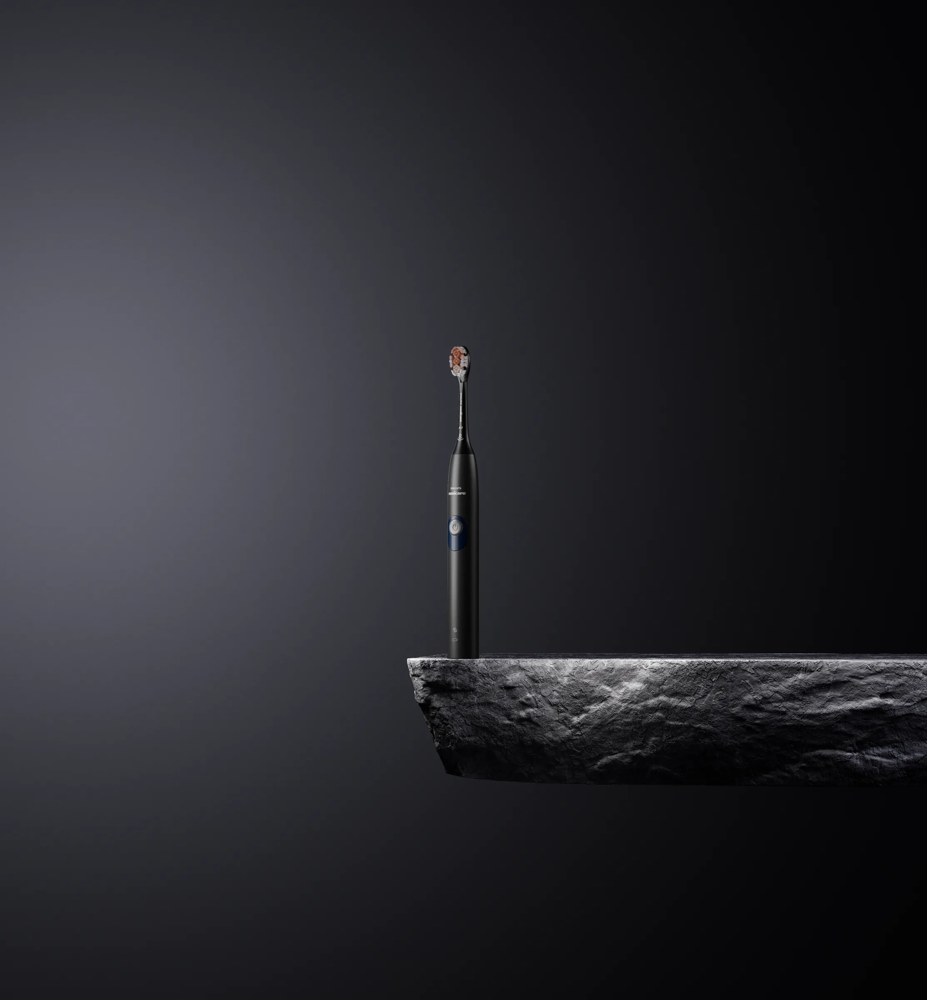
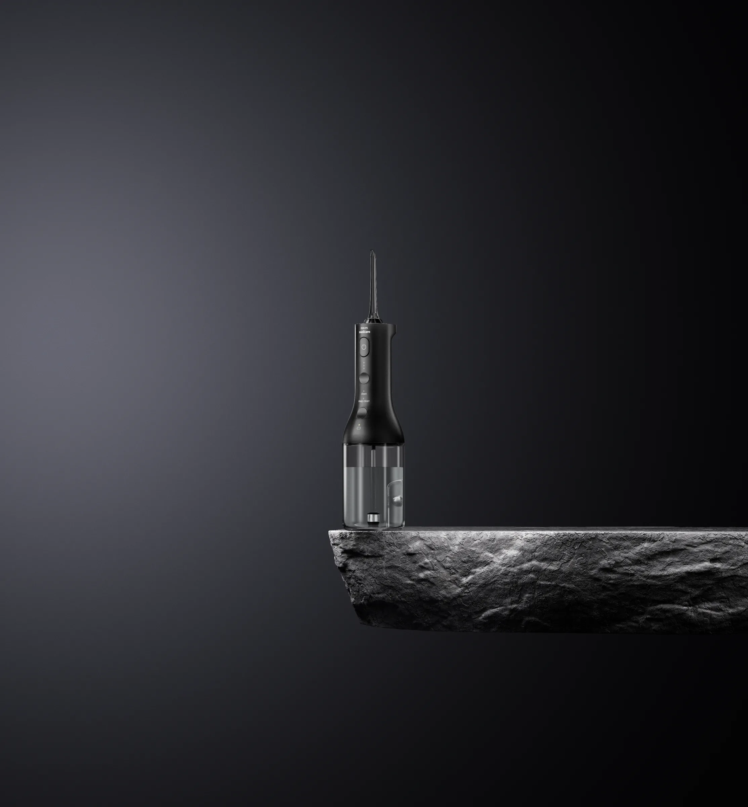

PROJECT 006 / PRODUCT & WATER
口腔护理
Oral Care · Product Visual
产品表现 / 水花视觉 / 光影构图
以纯粹的产品轮廓与富有动势的水形为视觉线索，探索光线、材质和空间留白之间的关系。

水的形态与产品细节
DETAILS / 02—03

PRODUCT / LIGHT / WATER
从静态产品到流动水形，让材质和光影共同塑造清晰、有节奏的产品视觉。
Oral Care · Product Visual
产品表现 / 水花视觉 / 光影构图
以纯粹的产品轮廓与富有动势的水形为视觉线索，探索光线、材质和空间留白之间的关系。


从静态产品到流动水形，让材质和光影共同塑造清晰、有节奏的产品视觉。